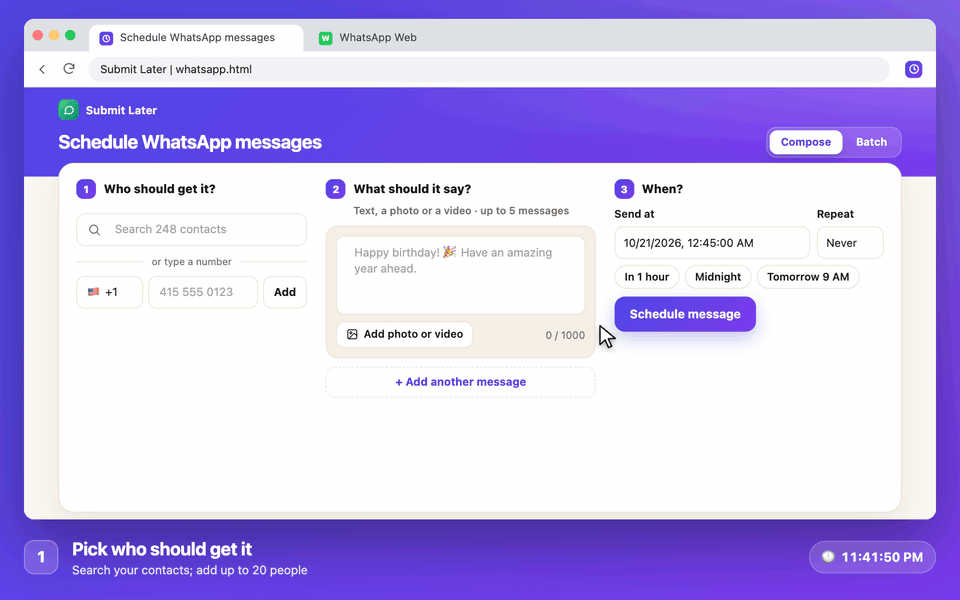

WhatsApp messages at the right time
Midnight birthday wishes, reminders and follow-ups, sent from WhatsApp Web. WhatsApp itself can't schedule on PC.
PressesSend
Prepare the message, form or request now. Submit Later handles the timed action later—with focused tools for browser buttons, managed Google Form response windows and HTTPS webhooks.
One account · three focused toolsProduct-specific plansNo automatic renewal
Submit Later is a Chrome extension for computers. Open this page on your laptop or desktop to install it.
Works with
GmailWhatsApp WebGoogle FormsGoogle MeetZoomOutlookTeamsDiscordSlackLinkedInUse the Chrome extension for browser actions, Timed Forms for managed Google Form response windows, and Webhook Scheduler for server-side requests. Each product has its own plan, so you pay only for what you use.
Try nine schedules without signing up: button presses, WhatsApp messages, repeats and Action Flows. Record a task, review its steps and choose when to run it.
Connect an existing Google Form, manage common questions and place the live form inside a branded page with a scheduled response window.
Schedule an HTTPS request from our servers for reports, cache refreshes, workflow triggers and routine integrations—without maintaining a cron host.
Timed Forms and Webhook Scheduler run from our servers, so their schedules do not depend on Chrome or your computer staying awake.
Connect a Google Form, choose its schedule and share one branded page. Visitors see a countdown, the embedded form while it is open and a clear closed state afterward.
Form opens in
The form becomes available on
Nov 1, 2026 at 10:00:00 AM local time
Send a GET, POST, PUT, PATCH or DELETE request once, daily, weekly or on a fixed interval. Use it for an integration that needs a clock, not another always-on server.
If you can click a button, you can schedule it. There's nothing to configure and no code.
Write the email, the WhatsApp message or the form exactly as you normally would.
Click the Submit Later icon → Pick a button to schedule, then click Send, Submit or Join. It's only selected, not pressed.
A quick pick or any date and time, to the second. It's pressed on time and you're notified.

Prepare a Gmail draft, fill an internal form or select a weekly report. Record the clicks and typing once, review the steps, then run the flow yourself or set a schedule.
Try it within your nine shared guest uses. Each flow run, including a test, uses one schedule; recording and editing use none. Keep Chrome running and your computer awake.
Recording performs real interactions. Test run holds recognized final actions; use a harmless draft for your first try.
Prepare your work now and choose when the browser should take the next step.
Prepare WhatsApp messages for a chosen time, with photos or videos. Send to one person or a small list; recipients are processed one by one while Chrome is running.
For buttons that need nothing typed, like Join, Register or Check in, Submit Later opens the page itself at the time and presses the button. Close the tab and forget about it.
Daily stand-ups, weekly reports, check-ins that reset at midnight. Set it once, and it keeps happening at the same time.
Registration opens at 10:00, but the Register button stays grey for a few seconds? Submit Later keeps trying, and reloads the page if you ask, then presses it the moment it unlocks.
If it's a button on a web page, Submit Later can press it for you later. Here are a few ideas.
Midnight birthday wishes, reminders and follow-ups, sent from WhatsApp Web. WhatsApp itself can't schedule on PC.
Google Meet, Zoom or Teams: it reopens the meeting page and presses Join now, every weekday if you like.
Course enrolment, exam forms and event sign-ups. It waits for Register to unlock, reloading if needed, then presses it.
Discord has no schedule button. Type the message now and it goes out when your team or server is online.
Fill the form while you have time, then schedule the extension to press Submit at the time you choose.
Write it tonight, send it at 9 AM from Gmail, Outlook or any webmail.
Join a class, webinar or livestream right as it starts, without watching the clock.
Press Check in or Claim on the same page every day, automatically.
Submit your weekly timesheet or report at 5 PM on Friday, even if you've already left.
Publish on LinkedIn, X, Facebook, Reddit or your blog when your audience is online.
Apply the moment a posting opens, or send your application at a good hour.
Send the Monday update, start the weekly export or post the weekly reminder, on repeat.
Press Call or Join in WhatsApp Web, Slack, Discord or Teams at the agreed time.
Start an export, publish a release or trigger a build at a quiet hour.
Enter the moment entries open, or submit right before the deadline.
Press Pay or Renew on the day it's due, with everything already filled in.
Good to know: Submit Later presses buttons you could press yourself. It can't solve CAPTCHAs or sign in for you, and it keeps Chrome running and your computer awake while something is scheduled. With Pro it can reopen the page itself, so the tab doesn't have to stay open.
A genuine mouse click, so Gmail, WhatsApp Web and modern web apps respond just like when you click.
While something is scheduled, your computer won't fall asleep and miss it. Free and Pro.
Signed out? Field empty? Page reloaded? You're warned while there's still time to fix it.
What you schedule stays on your computer. It only works on the sites you choose. No tracking, no ads.
Extension schedules stay in your browser. Timed Forms and Webhook Scheduler store only the configurations and run records needed to provide those server-side tools. Read the full privacy policy.
Each product has its own plan and access period. Start with one, then add another when the workflow justifies it.
Browser button presses, repeats, reopen and press, plus WhatsApp Web scheduling.
Choose Button SchedulerUp to 20 connected forms with question editing, managed response windows, branded pages and website embeds.
Choose Timed FormsUp to 20 jobs and 5,000 monthly runs, with recurring schedules and execution history.
Choose Webhook SchedulerChoose monthly or annual access for the tools you need. Compare product plans →
For buttons in a form you've filled in, yes, so what you typed is kept. With Pro's "Reopen & press", Submit Later opens the page itself at the time, so you can close the tab. Chrome needs to be running either way.
While something is scheduled, Submit Later keeps your computer awake (the screen can still turn off). Closing a laptop lid still puts it to sleep, so leave it open or plugged in with the lid up.
Yes. Guest access and Pro both let you schedule WhatsApp Web messages to any number or imported contact, once or on repeat: to up to 20 people at a time, several messages each, with photos and videos up to 16 MB. The 9 shared guest schedules count each recipient and repeat occurrence separately. Stay signed in to WhatsApp Web on that computer. Read more.
Extension schedules, contacts and message content stay in your browser. Server-side products store the form or webhook configuration you ask us to run, along with operational records. See the privacy policy.
Submit Later tells you the result of each scheduled press with a Chrome notification, but your computer decides whether to show it. If you see nothing:
Mac: System Settings → Notifications → Google Chrome → turn on Allow notifications and choose Alerts (so they stay until you click). Turn off Focus / Do Not Disturb.
Windows 11: Settings → System → Notifications → turn on Notifications and Google Chrome, and turn off Do not disturb. Windows 10: Settings → System → Notifications & actions → turn on Google Chrome, and turn off Focus assist.
Chrome: keep Chrome open; notifications come from it. If you use several Chrome profiles, they show for the profile where Submit Later is installed.
You won't miss anything either way: every result is in the extension's popup under Last result.
It can't solve CAPTCHAs, sign in for you, or bypass a site's rules, and it won't send bulk messages. It presses buttons you could press yourself.
Choose the scheduler that matches the job, set the time, and return to work that needs your attention.